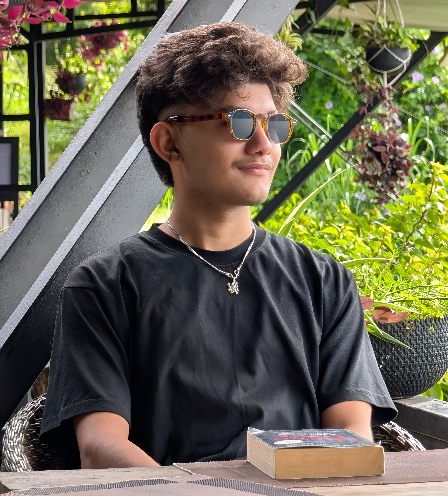

Software & OS
- OS
- CachyOS (Linux)
- Editor
- VS Code
- Shell
- Fish
- Browser
- Chrome

I'm Aavash Khadka, a Computer Engineering student at Kathmandu Engineering College, Nepal, with a strong interest in technology and a habit of being curious about almost everything.
Fig. 01 — Introduction
Design. Code. A different perspective.
A log of what I’m learning, building, and breaking while figuring out computer engineering step by step.
I enjoy learning new things, figuring out how they work, and occasionally wondering why I started in the first place. I'm still at the beginning of my journey — and I'm looking forward to having some cool things to show for it soon.
Months of practice sets, physics problems, and the occasional existential crisis over integration.
Kathmandu Engineering College. New syllabus, new people, new terminal prompt.
Whatever they turn out to be — I'll probably write about it here.